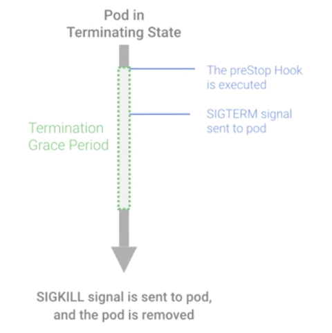

kubernetes最佳实践——来自谷歌的经验
阅读
发表于：2020年6月15日
Builing Small Containers 构造小的容器
构建小而牢固的容器镜像
指定你的基础镜像，加入你的改动，然后构建你的容器 ，但使用默认的基础镜像会产生充满安全漏洞的大型镜像，大多Docker镜像使用Debian或Ubuntu为基础镜像，虽然对兼容性和适应性有许多好处，但这些基础镜像会为你的容器增加上百兆字节的额外开销，例如，简单的 Node.js和Go"Hello World"的应用程序有大概700兆字节， 你的应用程序大概只有几个兆字节，所以，所有这些的额外开销不仅浪费空间并且会隐藏许多安全漏洞和程序bug. 如何构建小的容器
- 使用小的基础镜像 Small Base Images
选择官方提供的基于Alpine的基础镜像，如果没有，可以通过使用原始的Alpine Linux为一个起点来建造自己的容器。这可以对容器有一个全面的控制
|
|
- 使用Builder Pattern
|
|
可以使用Builder Pattern进一步的减少空间
|
|
原始的Alpine Linux没有安装任何的SSL证书，这将会使导致许多Https的API请求失败，所以需要安装CA证书。
多阶段构建
小容器带来的好处：
- 性能
- 构建的时间更短
- push的时间更短
- pull的时间更短，当一个节点down的时候，pull的时间越短服务可用的时间越及时
- 安全
- 小型容器的漏洞更小
Organizing Kubernetes with Namespaces 以命名空间组织资源
命名空间可以认为是你在Kubernetes集群中的虚拟集群。
Kubernetes默认会包括三个命名空间：
- default
- kube-system 不去管理kube-system是一个好主意
- kube-public 很少使用
创建命名空间
$ kubectl create namespace test
> test.yaml
kind: Namespace
apiVersion: v1
metadata:
name: test
labels:
name: test
$ kubectl apply -f test.yaml
命名空间只是一个逻辑上的隔离，一个命名空间的服务可以轻松的访问其他命名空间的服务
kubernetes中的服务使用通用DNS模式暴露其服务端点
<Service Name>.<Namespace Name>.svc.cluster.local
Kubernetes会将服务解析成完成的以上路径
如果在同一个Namespace时只需要写Service Name，如果需要访问其他的命名空间中的服务则是<Service Name>.<Namespace Name>
Kubernetes允许通过网络策略来实现对一个命名空间进行隔离和限制访问。NetWork Policies
到底需要创建多少命名空间：
- The Small Team(5-10)
可以使用default命名空间
- Rapidly growing team
以每个team来命名命名空间简化管理：如Team Bar, Team Baz, Team Foo
- The Large Company
强烈建议使用Spinnaker这种能支持Kubernetes的CD系统，每个团队可能需要多个命名空间
- Enterprise
使用多个物理集群，每个物理集群规划多个命名空间。
Kubernetes Health Checks with Readiness and Liveness Probes 就绪和存活健康检查
分布式系统可能很难管理，最大的原因是：许多移动的部件都必须正常工作才能使系统功能正常，如果有一小部分失常，系统会检测到，绕过去，然后修正它，这些都需要自动完成。
Kubernetes默认情况下：当Pod中的所有容器启动后，Kubernetes将会开始向该Pod发送流量，并在容器崩溃时重新启动容器。
Kubernetes有两种类型的健康检查：
- Readiness探针：让kubernetes知道你的应用何时已准备就绪，可以对外提供服务，Kubernete会在允许服务将流量发送到Pod之前，确保readiness通过检查。如果readiness探针失败，会停止赂这个pod发送流量
- Liveness探针：让Kubernetes知道你的应用程序是否存活，如果你的应用程序仍然存活，则Kubernetes不会去管，如果你的应用程序已经死了，那么kubernetes会删除这个pod，并启动一个新的替换它
探针的类型：
- HTTP
spec:
containers:
livenessProbe:
httpGet:
path: /healthz
port: 8080
如果收到是的 200或300范围内的HTTP响应，由会将其标识为健康
- Command
spec:
containers:
- name: liveness
livenessProbe:
exec:
command:
- myprogram
kubernetes会在容器中运行一个命令，如果命令返回码为0，则容器将标识为健康
- TCP
spec:
containers:
- name: liveness
livenessProbe:
tcpSocket:
port: 8080
kubernetes将尝试在指定端口上建设tcp连接，如果可以建立连接，则容器被认为是健康的。如gRPC, FTP这类服务是这种探针的主要候选者
配置参数：
- initialDelaySeconds 该参数是liveness探针中需要非常注意，不能设置的太短，造成应用频繁启动，推荐使用p99启动时间作为initialDelaySeconds
- periodSeconds
- timeoutSeconds
- successThreshold
- failureThreshold
Setting Resource Requests And Limits in Kubernetes 设置资源的请求和限制大小
requests和limits是kubernetes用于控制资源的机制，requests是容器保证能获得的资源，limits确保容器不会超过这个值。
containers:
- name: container1
image: busybox
resources:
requests:
memory: "32Mi"
cpu: "200m"
limits:
memory: "64Mi"
cpu: "250m"
CPU资源使用millicores定义，如果你的容器需要两个整核才能运行，则将这个值设置为 2000m，如果容器只需要1/4核，则将这个值设置为250m
如果设置的值大于最大的节点的核数，那么你的pod永远无法得到调度。所以，除非的你程序是专门为多核设计的， 如科学计算，一些数据库，通常最好的做法是保持CPU的request为1或以下，然后通过更多副本来扩展，这会给系统更大的灵活性和可靠性。
CPU limits，CPU认为是一个可以压缩的资源，如果你的应用开始达到CPU limits， Kubernetes会开始限制容器，这意味着你的CPU将受到人为限制，给你的应用带来潜在的更差的性能，CPU无法终止或收回。
内存不像CPU，它是不可压缩的，因为没有办法控制内存的使用，如果容器超过了内存的limits，它会被终止。
可以通过设置ResourceQuotas可锁定资源使用，例如一个生产空间和一个开发空间，常见的模式是不限制生产的配置，而对开发命名空间做严格的配额限制。
apiVersion: v1
kind: ResourceQuota
metadata:
name: demo
spec:
hard:
requests.cpu: 500m
requests.memory: 100Mib
limits.cpu: 700m
limits.memory: 500Mib
apiVersion: v1
kind: LimitRange
metadata:
name: demo
spec:
limits:
- default:
cpu: 600m
memory: 100Mib
defaultRequest:
cpu: 100m
memory: 50Mib
max:
cpu: 1000m
memory: 200Mib
min:
cpu: 10m
memory: 10Mib
type: Container
当资源有限的时候，kubernetes是通过什么规则在结束pod的：
- 资源超出requests的Pods。因此，如果你的容器根本没有requests，默认情况下，他们的使用的资源超出了他们的requests，因为他们没有任何requests,所以这些是终止运行的最佳候选
- 另外一些候选者是已超出requests但仍低于limit的Pod
- 如果所有的Pod具有相同的优先级，kubernetes终止了一个在其request中超出最多的pod
- 在极少的情况下，kubernetes可能会被迫终止仍处于requests范围内的pod
Terminating with Grace 优化关闭
Kubernetes要终止一个容器的时候，会有以下的几个步骤：
- 容器停止接收新的交易，Pod中运行的容器不会受到影响
- 所有新的交易都会被阻止进入
prestop钩子：它是一个特殊的命令或者HTTP请求，会被送到Pod的容器中，如果应用不能做到优雅关闭，可以使用prestop
terminationGracePeriodSeconds: 60 默认值为30秒
|
|

Mapping External Services 映射外部服务
可以使用kubernetes内置的基于DNS的服务发现访问这些外部服务，如同你访问kubernetes本地服务一样
|
|
Upgrading your Cluster with Zero Downtime 零停机升级群集
更新包括了Master节点和Node节点两部分，Master节点首先需要进行升级，然后再进行Node节点升级。
节点更新可以采用多种不同的策略：
- Rolling Update
- Migration with Node Pools